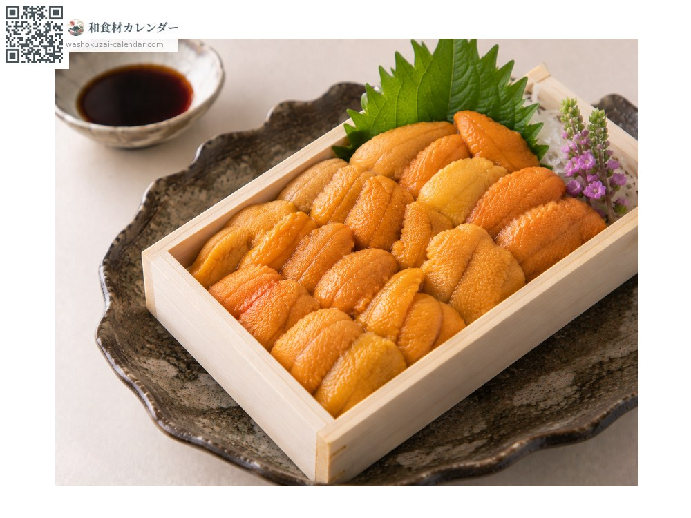
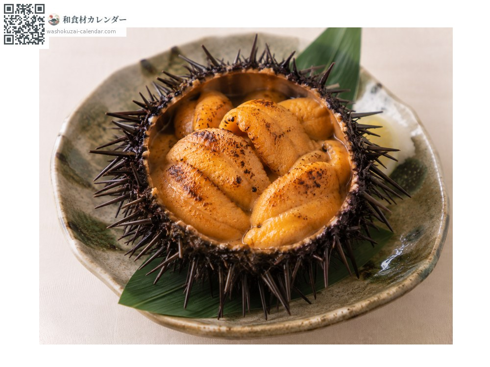
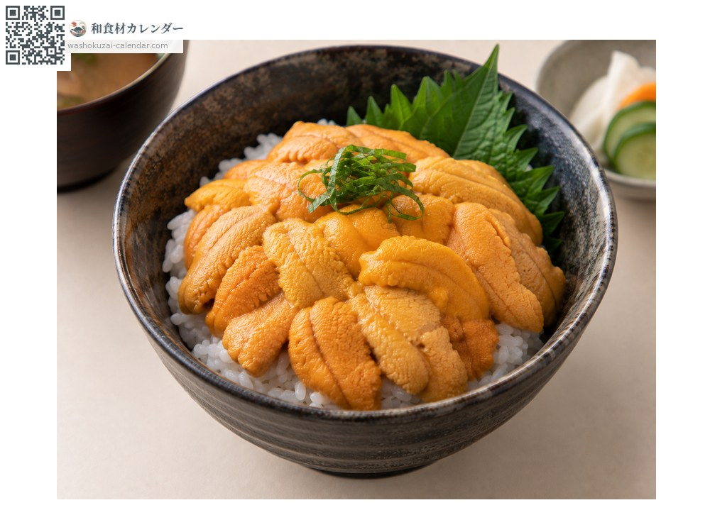
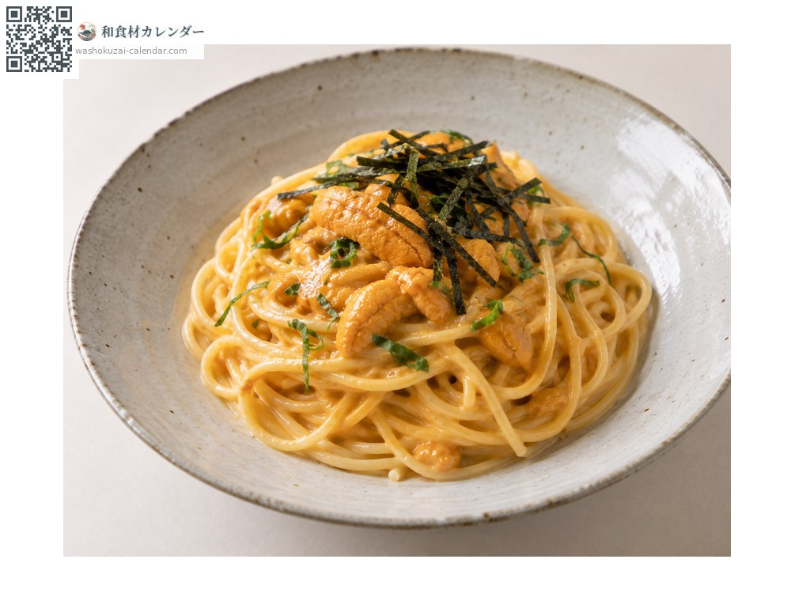

魚介
ウニ
うに
旬は6月・7月・8月

旬の時期
1月
2月
3月
4月
5月
6月
7月
8月
9月
10月
11月
12月
旬出回り
調理法

生うに
そのまま、または寿司や丼に。

焼きうに
軽く炙ると香りが立つ。

うに丼
温かい飯にのせて。

パスタ
クリームソースに合わせる。
選び方
粒がはっきりと立ち、崩れていないもの。色が鮮やかで水っぽくないもの。
保存方法
鮮度落ちが早い。当日中に。板うにはミョウバン処理の有無で味が変わる。
主な産地
豆知識
バフンウニは濃厚な甘み、ムラサキウニはあっさりとした味わい。食べる部分は生殖巣。